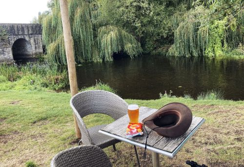
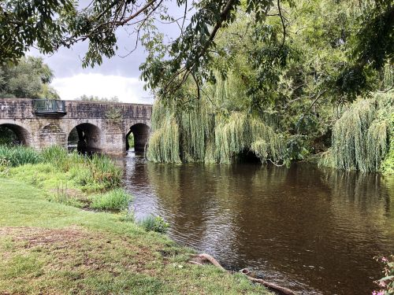
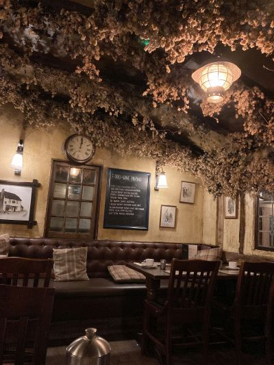

Day 5 -
Eynsford to Wye - 0 miles
The fifth day began with
bad news. The forecast for the day, which would be a walk through
isolated, open country, was strong thunderstorms both morning and
afternoon. Not wanting to be imprudent, but also feeling disappointed, I
took a train to the town of Wye. My decision was a good one, for it was
indeed a day of lightning and rain that only cleared up later in the
afternoon.
The afternoon brought more
bad news: Queen Elizabeth was ill and her family was arriving in Scotland
to see her. I stopped at the local church in Wye to pray for her.
(click
photos to enlarge)

After
praying for the Queen at the church, I walked to a pub on
the River Stour. Some young boys were playing near the river
and arguing over who would rule the country now that the
Queen has died. "The Queen is dead?" I asked. "Yes," they
said, "she died just a few minutes ago."
|

Another view of the Stour, willows, and bridge. It's
interesting how the places where you hear of major news
events are forever etched in your mind. This scene and those
boys telling me about the Queen will probably be one of my
strongest memories of the trip.
|
|

My inn's
pub/restaurant was decorated with dried hops.
|
|
|